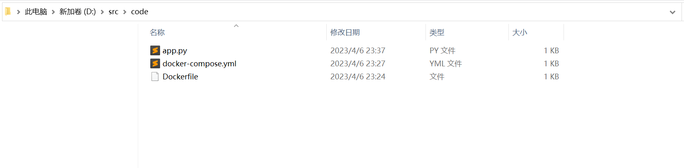
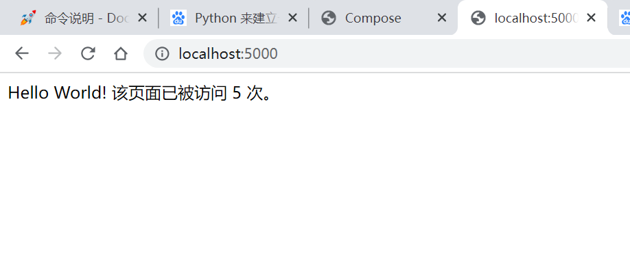

Docker Compose 是 Docker 官方编排（Orchestration）项目之一，负责快速的部署分布式应用。
Docker Compose
简介
Compose 项目是 Docker 官方的开源项目，负责实现对 Docker 容器集群的快速编排。
其代码目前在 https://github.com/docker/compose 上开源。
Compose 定位是 「定义和运行多个 Docker 容器的应用（Defining and running multi-container Docker applications）」，其前身是开源项目 Fig。
通过第一部分中的介绍，我们知道使用一个 Dockerfile 模板文件，可以让用户很方便的定义一个单独的应用容器。然而，在日常工作中，经常会碰到需要多个容器相互配合来完成某项任务的情况。例如要实现一个 Web 项目，除了 Web 服务容器本身，往往还需要再加上后端的数据库服务容器，甚至还包括负载均衡容器等。
Compose 恰好满足了这样的需求。它允许用户通过一个单独的 docker-compose.yml 模板文件（YAML 格式）来定义一组相关联的应用容器为一个项目（project）。
Compose 中有两个重要的概念：
- 服务 (
service)：一个应用的容器，实际上可以包括若干运行相同镜像的容器实例。 - 项目 (
project)：由一组关联的应用容器组成的一个完整业务单元，在docker-compose.yml文件中定义。
Compose 的默认管理对象是项目，通过子命令对项目中的一组容器进行便捷地生命周期管理。
Compose 项目由 Python 编写，实现上调用了 Docker 服务提供的 API 来对容器进行管理。因此，只要所操作的平台支持 Docker API，就可以在其上利用 Compose 来进行编排管理。
安装与卸载
Docker Desktop for Mac/Windows 自带 docker-compose 二进制文件，安装 Docker 之后可以直接使用。
PS D:\hexoBlog> docker-compose --version
Docker Compose version v2.15.1
PS D:\hexoBlog>使用
术语
首先介绍几个术语。
- 服务 (
service)：一个应用容器，实际上可以运行多个相同镜像的实例。 - 项目 (
project)：由一组关联的应用容器组成的一个完整业务单元。
可见，一个项目可以由多个服务（容器）关联而成，Compose 面向项目进行管理。
场景
最常见的项目是 web 网站，该项目应该包含 web 应用和缓存。
下面我们用 Python 来建立一个能够记录页面访问次数的 web 网站。
web 应用
新建文件夹，在该目录中编写 app.py 文件
from flask import Flask
from redis import Redis
app = Flask(__name__)
redis = Redis(host='redis', port=6379)
@app.route('/')
def hello():
count = redis.incr('hits')
return 'Hello World! 该页面已被访问 {} 次。\n'.format(count)
if __name__ == "__main__":
app.run(host="0.0.0.0", debug=True)Dockerfile
编写 Dockerfile 文件，内容为
FROM python:3.6-alpine
ADD . /code
WORKDIR /code
RUN pip install redis flask
CMD ["python", "app.py"]docker-compose.yml
编写 docker-compose.yml 文件，这个是 Compose 使用的主模板文件。
version: '3'
services:
web:
build: .
ports:
- "5000:5000"
redis:
image: "redis:alpine"运行 compose 项目
PS D:\src> cd code
PS D:\src\code> docker-compose up -d
[+] Building 83.6s (9/9) FINISHED
=> [internal] load build definition from Dockerfile 0.0s
=> => transferring dockerfile: 142B 0.0s
=> [internal] load .dockerignore 0.0s
=> => transferring context: 2B 0.0s
=> [internal] load metadata for docker.io/library/python:3.6-alpine 0.8s
=> [internal] load build context 0.0s
=> => transferring context: 664B 0.0s
=> CACHED [1/4] FROM docker.io/library/python:3.6-alpine@sha256:579978dec4602646fe1262f02b96371779bfb0294e92c913 0.0s
=> [2/4] ADD . /code 0.0s
=> [3/4] WORKDIR /code 0.0s
=> [4/4] RUN pip install redis flask 82.4s
=> exporting to image 0.2s
=> => exporting layers 0.2s
=> => writing image sha256:01616d273ca94adc55f1d51a9a7167f3a9fa3a027125feea28e560277d193009 0.0s
=> => naming to docker.io/library/code-web 0.0s
[+] Running 3/3
- Network code_default Created 0.6s
- Container code-web-1 Started 1.3s
- Container code-redis-1 Started 1.0s
PS D:\src\code>此时访问本地 5000 端口，每次刷新页面，计数就会加 1。


使用
命令对象与格式
对于 Compose 来说，大部分命令的对象既可以是项目本身，也可以指定为项目中的服务或者容器。如果没有特别的说明，命令对象将是项目，这意味着项目中所有的服务都会受到命令影响。
执行 docker-compose [COMMAND] --help 或者 docker-compose help [COMMAND] 可以查看具体某个命令的使用格式。
docker-compose 命令的基本的使用格式是
docker-compose [-f=<arg>...] [options] [COMMAND] [ARGS...]命令选项
- -f, –file FILE
指定使用的 Compose 模板文件，默认为docker-compose.yml`，可以多次指定。 -p, --project-name NAME指定项目名称，默认将使用所在目录名称作为项目名。--verbose输出更多调试信息。-v, --version打印版本并退出。
命令使用说明
build
格式为 docker-compose build [options] [SERVICE...]。
构建（重新构建）项目中的服务容器。
服务容器一旦构建后，将会带上一个标记名，例如对于 web 项目中的一个 db 容器，可能是 web_db。
可以随时在项目目录下运行 docker-compose build 来重新构建服务。
选项包括：
--force-rm删除构建过程中的临时容器。--no-cache构建镜像过程中不使用 cache（这将加长构建过程）。--pull始终尝试通过 pull 来获取更新版本的镜像。
config
验证 Compose 文件格式是否正确，若正确则显示配置，若格式错误显示错误原因。
down
此命令将会停止 up 命令所启动的容器，并移除网络
exec
进入指定的容器。
help
获得一个命令的帮助。
images
列出 Compose 文件中包含的镜像。
kill
格式为 docker-compose kill [options] [SERVICE...]。
通过发送 SIGKILL 信号来强制停止服务容器。
支持通过 -s 参数来指定发送的信号，例如通过如下指令发送 SIGINT 信号。
docker-compose kill -s SIGINTlogs
格式为 docker-compose logs [options] [SERVICE...]。
查看服务容器的输出。默认情况下，docker-compose 将对不同的服务输出使用不同的颜色来区分。可以通过 --no-color 来关闭颜色。
该命令在调试问题的时候十分有用。
pause
格式为 docker-compose pause [SERVICE...]。
暂停一个服务容器。
port
格式为 docker-compose port [options] SERVICE PRIVATE_PORT。
打印某个容器端口所映射的公共端口。
选项：
--protocol=proto指定端口协议，tcp（默认值）或者 udp。--index=index如果同一服务存在多个容器，指定命令对象容器的序号（默认为 1）。
ps
格式为 docker-compose ps [options] [SERVICE...]。
列出项目中目前的所有容器。
选项：
-q只打印容器的 ID 信息。
pull
格式为 docker-compose pull [options] [SERVICE...]。
拉取服务依赖的镜像。
选项：
--ignore-pull-failures忽略拉取镜像过程中的错误。
push
推送服务依赖的镜像到 Docker 镜像仓库。
restart
格式为 docker-compose restart [options] [SERVICE...]。
重启项目中的服务。
选项：
-t, --timeout TIMEOUT指定重启前停止容器的超时（默认为 10 秒）。
rm
格式为 docker-compose rm [options] [SERVICE...]。
删除所有（停止状态的）服务容器。推荐先执行 docker-compose stop 命令来停止容器。
选项：
-f, --force强制直接删除，包括非停止状态的容器。一般尽量不要使用该选项。-v删除容器所挂载的数据卷。
run
格式为 docker-compose run [options] [-p PORT...] [-e KEY=VAL...] SERVICE [COMMAND] [ARGS...]。
在指定服务上执行一个命令。
例如：
$ docker-compose run ubuntu ping docker.com
将会启动一个 ubuntu 服务容器，并执行 ping docker.com 命令。
默认情况下，如果存在关联，则所有关联的服务将会自动被启动，除非这些服务已经在运行中。
该命令类似启动容器后运行指定的命令，相关卷、链接等等都将会按照配置自动创建。
两个不同点：
- 给定命令将会覆盖原有的自动运行命令；
- 不会自动创建端口，以避免冲突。
如果不希望自动启动关联的容器，可以使用 --no-deps 选项，例如
$ docker-compose run –no-deps web python manage.py shell
将不会启动 web 容器所关联的其它容器。
选项：
-d后台运行容器。--name NAME为容器指定一个名字。--entrypoint CMD覆盖默认的容器启动指令。-e KEY=VAL设置环境变量值，可多次使用选项来设置多个环境变量。-u, --user=""指定运行容器的用户名或者 uid。--no-deps不自动启动关联的服务容器。--rm运行命令后自动删除容器，d模式下将忽略。-p, --publish=[]映射容器端口到本地主机。--service-ports配置服务端口并映射到本地主机。-T不分配伪 tty，意味着依赖 tty 的指令将无法运行。
scale
格式为 docker-compose scale [options] [SERVICE=NUM...]。
设置指定服务运行的容器个数。
通过 service=num 的参数来设置数量。例如：
$ docker-compose scale web=3 db=2
将启动 3 个容器运行 web 服务，2 个容器运行 db 服务。
一般的，当指定数目多于该服务当前实际运行容器，将新创建并启动容器；反之，将停止容器。
选项：
-t, --timeout TIMEOUT停止容器时候的超时（默认为 10 秒）。
start
格式为 docker-compose start [SERVICE...]。
启动已经存在的服务容器。
stop
格式为 docker-compose stop [options] [SERVICE...]。
停止已经处于运行状态的容器，但不删除它。通过 docker-compose start 可以再次启动这些容器。
选项：
-t, --timeout TIMEOUT停止容器时候的超时（默认为 10 秒）。
top
查看各个服务容器内运行的进程。
unpause
格式为 docker-compose unpause [SERVICE...]。
恢复处于暂停状态中的服务。
up
格式为 docker-compose up [options] [SERVICE...]。
该命令十分强大，它将尝试自动完成包括构建镜像，（重新）创建服务，启动服务，并关联服务相关容器的一系列操作。
链接的服务都将会被自动启动，除非已经处于运行状态。
可以说，大部分时候都可以直接通过该命令来启动一个项目。
默认情况，docker-compose up 启动的容器都在前台，控制台将会同时打印所有容器的输出信息，可以很方便进行调试。
当通过 Ctrl-C 停止命令时，所有容器将会停止。
如果使用 docker-compose up -d，将会在后台启动并运行所有的容器。一般推荐生产环境下使用该选项。
默认情况，如果服务容器已经存在，docker-compose up 将会尝试停止容器，然后重新创建（保持使用 volumes-from 挂载的卷），以保证新启动的服务匹配 docker-compose.yml 文件的最新内容。如果用户不希望容器被停止并重新创建，可以使用 docker-compose up --no-recreate。这样将只会启动处于停止状态的容器，而忽略已经运行的服务。如果用户只想重新部署某个服务，可以使用 docker-compose up --no-deps -d <SERVICE_NAME> 来重新创建服务并后台停止旧服务，启动新服务，并不会影响到其所依赖的服务。
选项：
-d在后台运行服务容器。--no-color不使用颜色来区分不同的服务的控制台输出。--no-deps不启动服务所链接的容器。--force-recreate强制重新创建容器，不能与--no-recreate同时使用。--no-recreate如果容器已经存在了，则不重新创建，不能与--force-recreate同时使用。--no-build不自动构建缺失的服务镜像。-t, --timeout TIMEOUT停止容器时候的超时（默认为 10 秒）。
version
格式为 docker-compose version。
打印版本信息。
Compose 模板文件
模板文件是使用 Compose 的核心，涉及到的指令关键字也比较多。但大家不用担心，这里面大部分指令跟 docker run 相关参数的含义都是类似的。
默认的模板文件名称为 docker-compose.yml，格式为 YAML 格式。
version: "3"
services:
webapp:
image: examples/web
ports:
- "80:80"
volumes:
- "/data"build
指定 Dockerfile 所在文件夹的路径（可以是绝对路径，或者相对 docker-compose.yml 文件的路径）。 Compose 将会利用它自动构建这个镜像，然后使用这个镜像。
version: '3'
services:
webapp:
build: ./dir你也可以使用 context 指令指定 Dockerfile 所在文件夹的路径。
使用 dockerfile 指令指定 Dockerfile 文件名。
使用 arg 指令指定构建镜像时的变量。
version: '3'
services:
webapp:
build:
context: ./dir
dockerfile: Dockerfile-alternate
args:
buildno: 1使用 cache_from 指定构建镜像的缓存
build:
context: .
cache_from:
- alpine:latest
- corp/web_app:3.14cap_add, cap_drop
指定容器的内核能力（capacity）分配。
例如，让容器拥有所有能力可以指定为：
cap_add:
- ALL去掉 NET_ADMIN 能力可以指定为：
cap_drop:
- NET_ADMINcommand
覆盖容器启动后默认执行的命令。
command: echo "hello world"configs
仅用于 Swarm mode，详细内容请查看 Swarm mode 一节。
cgroup_parent
指定父 cgroup 组，意味着将继承该组的资源限制。
例如，创建了一个 cgroup 组名称为 cgroups_1。
cgroup_parent: cgroups_1container_name
指定容器名称。默认将会使用 项目名称_服务名称_序号 这样的格式。
container_name: docker-web-container注意: 指定容器名称后，该服务将无法进行扩展（scale），因为 Docker 不允许多个容器具有相同的名称。
deploy
仅用于 Swarm mode，详细内容请查看 Swarm mode 一节
devices
指定设备映射关系。
devices:
- "/dev/ttyUSB1:/dev/ttyUSB0"depends_on
解决容器的依赖、启动先后的问题。以下例子中会先启动 redis db 再启动 web
version: '3'
services:
web:
build: .
depends_on:
- db
- redis
redis:
image: redis
db:
image: postgres注意：
web服务不会等待redisdb「完全启动」之后才启动。
dns
自定义 DNS 服务器。可以是一个值，也可以是一个列表。
dns: 8.8.8.8
dns:
- 8.8.8.8
- 114.114.114.114dns_search
配置 DNS 搜索域。可以是一个值，也可以是一个列表。
dns_search: example.com
dns_search:
- domain1.example.com
- domain2.example.comtmpfs
挂载一个 tmpfs 文件系统到容器。
tmpfs: /run
tmpfs:
- /run
- /tmpenv_file
从文件中获取环境变量，可以为单独的文件路径或列表。
如果通过 docker-compose -f FILE 方式来指定 Compose 模板文件，则 env_file 中变量的路径会基于模板文件路径。
如果有变量名称与 environment 指令冲突，则按照惯例，以后者为准。
env_file: .env
env_file:
- ./common.env
- ./apps/web.env
- /opt/secrets.env环境变量文件中每一行必须符合格式，支持 # 开头的注释行。
\# common.env: Set development environment
PROG_ENV=developmentenvironment
设置环境变量。你可以使用数组或字典两种格式。
只给定名称的变量会自动获取运行 Compose 主机上对应变量的值，可以用来防止泄露不必要的数据。
environment:
RACK_ENV: development
SESSION_SECRET:
environment:
- RACK_ENV=development
- SESSION_SECRET如果变量名称或者值中用到 true|false，yes|no 等表达 布尔 含义的词汇，最好放到引号里，避免 YAML 自动解析某些内容为对应的布尔语义。这些特定词汇，包括
y|Y|yes|Yes|YES|n|N|no|No|NO|true|True|TRUE|false|False|FALSE|on|On|ON|off|Off|OFFexpose
暴露端口，但不映射到宿主机，只被连接的服务访问。
仅可以指定内部端口为参数
expose:
- "3000"
- "8000"external_links
注意：不建议使用该指令。
链接到 docker-compose.yml 外部的容器，甚至并非 Compose 管理的外部容器。
external_links:
- redis_1
- project_db_1:mysql
- project_db_1:postgresqlextra_hosts
类似 Docker 中的 --add-host 参数，指定额外的 host 名称映射信息。
extra_hosts:
- "googledns:8.8.8.8"
- "dockerhub:52.1.157.61"会在启动后的服务容器中 /etc/hosts 文件中添加如下两条条目。
8.8.8.8 googledns
52.1.157.61 dockerhubhealthcheck
通过命令检查容器是否健康运行。
healthcheck:
test: ["CMD", "curl", "-f", "http://localhost"]
interval: 1m30s
timeout: 10s
retries: 3image
指定为镜像名称或镜像 ID。如果镜像在本地不存在，Compose 将会尝试拉取这个镜像。
image: ubuntu
image: orchardup/postgresql
image: a4bc65fdlabels
为容器添加 Docker 元数据（metadata）信息。例如可以为容器添加辅助说明信息。
labels:
com.startupteam.description: "webapp for a startup team"
com.startupteam.department: "devops department"
com.startupteam.release: "rc3 for v1.0"links
注意：不推荐使用该指令。
logging
配置日志选项。
logging:
driver: syslog
options:
syslog-address: "tcp://192.168.0.42:123"目前支持三种日志驱动类型。
driver: "json-file"
driver: "syslog"
driver: "none"options 配置日志驱动的相关参数。
options:
max-size: "200k"
max-file: "10"network_mode
设置网络模式。使用和 docker run 的 --network 参数一样的值。
network_mode: "bridge"
network_mode: "host"
network_mode: "none"
network_mode: "service:[service name]"
network_mode: "container:[container name/id]"networks
配置容器连接的网络。
version: "3"
services:
some-service:
networks:
- some-network
- other-network
networks:
some-network:
other-network:pid
跟主机系统共享进程命名空间。打开该选项的容器之间，以及容器和宿主机系统之间可以通过进程 ID 来相互访问和操作。
pid: "host"ports
暴露端口信息。
使用宿主端口：容器端口 (HOST:CONTAINER) 格式，或者仅仅指定容器的端口（宿主将会随机选择端口）都可以。
ports:
- "3000"
- "8000:8000"
- "49100:22"
- "127.0.0.1:8001:8001"注意：当使用 *HOST:CONTAINER* 格式来映射端口时，如果你使用的容器端口小于 60 并且没放到引号里，可能会得到错误结果，因为 *YAML* 会自动解析 *xx:yy* 这种数字格式为 60 进制。为避免出现这种问题，建议数字串都采用引号包括起来的字符串格式。
secrets
存储敏感数据，例如 mysql 服务密码。
version: "3.1"
services:
mysql:
image: mysql
environment:
MYSQL_ROOT_PASSWORD_FILE: /run/secrets/db_root_password
secrets:
- db_root_password
- my_other_secret
secrets:
my_secret:
file: ./my_secret.txt
my_other_secret:
external: truesecurity_opt
指定容器模板标签（label）机制的默认属性（用户、角色、类型、级别等）。例如配置标签的用户名和角色名。
security_opt:
- label:user:USER
- label:role:ROLEstop_signal
设置另一个信号来停止容器。在默认情况下使用的是 SIGTERM 停止容器。
stop_signal: SIGUSR1sysctls
配置容器内核参数。
sysctls:
net.core.somaxconn: 1024
net.ipv4.tcp_syncookies: 0
sysctls:
- net.core.somaxconn=1024
- net.ipv4.tcp_syncookies=0ulimits
指定容器的 ulimits 限制值。
例如，指定最大进程数为 65535，指定文件句柄数为 20000（软限制，应用可以随时修改，不能超过硬限制） 和 40000（系统硬限制，只能 root 用户提高）。
ulimits:
nproc: 65535
nofile:
soft: 20000
hard: 40000volumes
数据卷所挂载路径设置。可以设置为宿主机路径(HOST:CONTAINER)或者数据卷名称(VOLUME:CONTAINER)，并且可以设置访问模式 （HOST:CONTAINER:ro）。
该指令中路径支持相对路径。
volumes:
- /var/lib/mysql
- cache/:/tmp/cache
- ~/configs:/etc/configs/:ro如果路径为数据卷名称，必须在文件中配置数据卷。
version: "3"
services:
my_src:
image: mysql:8.0
volumes:
- mysql_data:/var/lib/mysql
volumes:
mysql_data: 其它指令
此外，还有包括 domainname, entrypoint, hostname, ipc, mac_address, privileged, read_only, shm_size, restart, stdin_open, tty, user, working_dir 等指令，基本跟 docker run 中对应参数的功能一致。
指定服务容器启动后执行的入口文件。
entrypoint: /code/entrypoint.sh指定容器中运行应用的用户名。
user: nginx指定容器中工作目录。
working_dir: /code指定容器中搜索域名、主机名、mac 地址等。
domainname: your_website.com
hostname: test
mac_address: 08-00-27-00-0C-0A允许容器中运行一些特权命令。
privileged: true指定容器退出后的重启策略为始终重启。该命令对保持服务始终运行十分有效，在生产环境中推荐配置为 always 或者 unless-stopped。
restart: always以只读模式挂载容器的 root 文件系统，意味着不能对容器内容进行修改。
read_only: true打开标准输入，可以接受外部输入。
stdin_open: true模拟一个伪终端。
tty: true读取变量
Compose 模板文件支持动态读取主机的系统环境变量和当前目录下的 .env 文件中的变量。
例如，下面的 Compose 文件将从运行它的环境中读取变量 ${MONGO_VERSION} 的值，并写入执行的指令中。
version: "3"
services:
db:
image: "mongo:${MONGO_VERSION}"如果执行 MONGO_VERSION=3.2 docker-compose up 则会启动一个 mongo:3.2 镜像的容器；如果执行 MONGO_VERSION=2.8 docker-compose up 则会启动一个 mongo:2.8 镜像的容器。
若当前目录存在 .env 文件，执行 docker-compose 命令时将从该文件中读取变量。
在当前目录新建 .env 文件并写入以下内容。
\# 支持 # 号注释
MONGO_VERSION=3.6执行 docker-compose up 则会启动一个 mongo:3.6 镜像的容器。